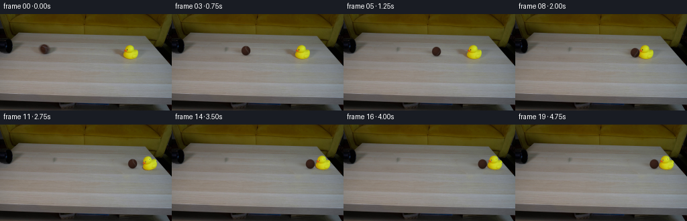
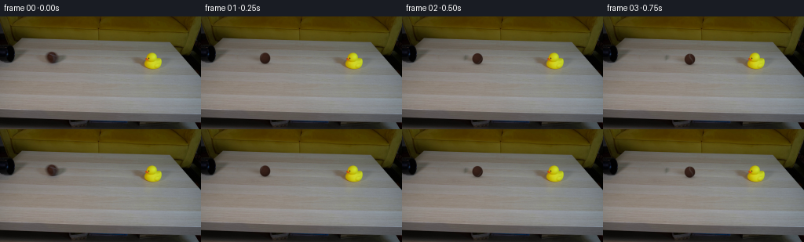

CODING AGENTS AS PIXEL WORLD MODELS
traex/GPT-6.1-Sol · 0008
点击播放 · 原生 RGB 像素
逐轮保存的候选
回放视频、检查图与代码变化。
每份候选均可单独播放。实际图片检查记录在下方工具轨迹中。
候选 01播放与检查图
点击播放 · 原生 RGB 像素


展开代码变化
--- 上一保存版本
+++ 本次保存版本
@@ -0,0 +1,190 @@
+from pathlib import Path
+import numpy as np
+from PIL import Image
+from scipy.ndimage import gaussian_filter, distance_transform_edt, map_coordinates
+import cv2
+import artifact_io
+
+ROOT = Path(__file__).resolve().parent
+H, W = 144, 256
+Y, X = np.mgrid[:H, :W].astype(float)
+
+def smoothstep(x):
+ x = np.clip(x, 0, 1)
+ return x*x*(3-2*x)
+
+
+def repair_patch(im, polygon, limits, salt=0):
+ """Interpolate the continuous tabletop, retaining its horizontal grain."""
+ m = np.zeros((H,W), np.uint8)
+ cv2.fillPoly(m, [np.asarray(polygon, np.int32)], 1)
+ # Inpainting supplies low-contrast grain and a boundary-continuous result.
+ inp = cv2.inpaint(im.astype(np.uint8), m*255, 5, cv2.INPAINT_TELEA).astype(float)
+ lo,hi,top,bottom = limits
+ interp = im.copy().astype(float)
+ rng = np.random.default_rng(122+salt)
+ # Sample the same grain bands on either side, well away from object shadows.
+ for y in range(top, bottom+1):
+ left = np.mean(im[y,lo-10:lo-2],axis=0)
+ right = np.mean(im[y,hi+3:hi+11],axis=0)
+ xx = np.arange(lo-2,hi+3)
+ f = ((xx-(lo-6))/(hi-lo+13))[:,None]
+ row = left*(1-f)+right*f
+ row += rng.normal(0,.6,(len(xx),1))
+ interp[y,xx] = row
+ dist = distance_transform_edt(m)
+ weight = smoothstep(dist/4)[...,None]
+ patch = inp*(1-weight*.85)+interp*weight*.85
+ out = im.copy().astype(float)
+ out[m>0] = patch[m>0]
+ return out, m.astype(float)
+
+
+def extract_duck(im, background):
+ # Separate the original yellow rubber surface and orange beak from the
+ # tabletop by chroma, then solve antialiased edge coverage against the plate.
+ r,g,b = im.transpose(2,0,1)
+ domain = (X>=181)&(X<=207)&(Y>=44)&(Y<=68)
+ seeds = domain & (((r>140)&(g>124)&(b<37)) | ((r>155)&(g>64)&(g<125)&(b<36)))
+ d, nearest = distance_transform_edt(~seeds, return_indices=True)
+ near = im[nearest[0],nearest[1]]
+ direction = near-background
+ diff = im-background
+ a = np.sum(diff*direction,axis=2)/(np.sum(direction*direction,axis=2)+1e-6)
+ a = np.clip(a,0,1)
+ a[seeds] = 1
+ a *= domain & (d<2.05)
+ # Long brown tabletop shadows are not part of the rubber silhouette.
+ a[(r+g-2*b<68) & ~seeds] = 0
+ a[a<.045] = 0
+ # Recover premultiplied foreground without carrying the old background.
+ fg = im-background*(1-a[...,None])
+ fg = np.clip(fg,0,255*a[...,None])
+ return a,fg
+
+
+def transform_duck(canvas, alpha, premult, dx, angle, hop):
+ # Rotate about the rubber duck's bottom contact, keeping the camera locked.
+ px,py = 195.0,65.5
+ theta=np.deg2rad(angle); c,s=np.cos(theta),np.sin(theta)
+ tx,ty = X-(px+dx),Y-(py-hop)
+ srcx = c*tx+s*ty+px
+ srcy = -s*tx+c*ty+py
+ a = np.clip(map_coordinates(alpha,[srcy,srcx],order=3,mode='constant'),0,1)
+ rgb = np.stack([map_coordinates(premult[...,k],[srcy,srcx],order=3,mode='constant') for k in range(3)],-1)
+ rgb = np.clip(rgb,0,a[...,None]*255)
+ return canvas*(1-a[...,None])+rgb
+
+
+def ellipse_field(cx,cy,rx,ry,angle=0):
+ c,s=np.cos(angle),np.sin(angle)
+ dx,dy=X-cx,Y-cy
+ u=c*dx+s*dy; v=-s*dx+c*dy
+ return np.exp(-.5*((u/rx)**2+(v/ry)**2))
+
+
+def duck_shadow(canvas, dx, angle, hop):
+ cx,cy=195+dx,65.5
+ height = 1-.16*min(abs(angle)/40,1)
+ # Diffuse directional shadow toward the rear-left of the tabletop.
+ shadow = ellipse_field(cx-11*height,cy-6*height,9.3*height,2.4+hop*.2,.39)
+ canvas=canvas*(1-shadow[...,None]*np.array([.15,.22,.29]))
+ reflect=ellipse_field(cx,cy+2.2,8.0,3.2)
+ canvas=canvas+reflect[...,None]*np.array([5.,4.,-12.])
+ contact=ellipse_field(cx+.8,cy+.6,6.1,1.35)
+ canvas=canvas*(1-contact[...,None]*np.array([.12,.13,.15]))
+ return canvas
+
+
+def ball_shadow(canvas,cx,cy):
+ field=ellipse_field(cx-7.0,cy+1.5,7.2,2.05,.17)
+ canvas=canvas*(1-field[...,None]*np.array([.15,.20,.25]))
+ contact=ellipse_field(cx+.3,cy+6.75,4.7,1.05)
+ canvas=canvas*(1-contact[...,None]*np.array([.24,.25,.26]))
+ return canvas
+
+
+def draw_ball(canvas,cx,cy,travel):
+ # A matte felt sphere rendered analytically at 4x sample density. The seam
+ # and felt coordinates rotate by distance/radius, not the light direction.
+ scale=4
+ xlo,xhi=max(0,int(cx-10)),min(W,int(cx+11))
+ ylo,yhi=max(0,int(cy-10)),min(H,int(cy+11))
+ yy,xx=np.mgrid[ylo*scale:yhi*scale,xlo*scale:xhi*scale].astype(float)
+ xx=(xx+.5)/scale-.5; yy=(yy+.5)/scale-.5
+ nx=(xx-cx)/6.65; ny=(yy-cy)/7.05
+ rho2=nx*nx+ny*ny
+ nz=np.sqrt(np.maximum(0,1-rho2))
+ a=smoothstep((1-np.sqrt(rho2))/.07+.5)
+ norm=np.stack([nx,ny,nz],axis=-1)
+ light=np.array([-.27,-.50,.823]); light/=np.linalg.norm(light)
+ illumination=.63+.36*np.maximum(0,np.sum(norm*light,axis=-1))
+ theta=travel/6.85
+ c,s=np.cos(theta),np.sin(theta)
+ # Inverse rigid rolling transform around the screen vertical axis.
+ u=c*nx-s*nz; v=ny; w=s*nx+c*nz
+ fine=(np.sin(77*u+91*v+63*w)+np.sin(143*u-81*v+59*w)+np.sin(93*u+111*v-151*w))/3
+ coarse=np.sin(7*u+4*v-3*w)*np.cos(11*v+4*w)
+ fuzz=1+.045*fine+.035*coarse
+ rgb=np.array([57.,34.,26.])[None,None,:]*(illumination*fuzz)[...,None]
+ # A closed, gently undulating tennis-ball seam on the sphere surface.
+ seamdist=np.abs(u-(.20+.32*np.sin(2.7*v))) / np.sqrt(1+(.864*np.cos(2.7*v))**2)
+ seam=np.exp(-.5*(seamdist/.062)**2)*.82
+ seam_color=np.array([83.,74.,70.])[None,None,:]*illumination[...,None]
+ rgb=rgb*(1-seam[...,None])+seam_color*seam[...,None]
+ # Fine silhouette softness matches the source photograph's small focal size.
+ pr=gaussian_filter(rgb*a[...,None],sigma=(1.05,1.05,0))
+ a=gaussian_filter(a,1.05)
+ a=a.reshape(yhi-ylo,scale,xhi-xlo,scale).mean((1,3))
+ pr=pr.reshape(yhi-ylo,scale,xhi-xlo,scale,3).mean((1,3))
+ canvas[ylo:yhi,xlo:xhi] = canvas[ylo:yhi,xlo:xhi]*(1-a[...,None])+pr
+ return canvas
+
+
+def generate():
+ original=np.asarray(Image.open(ROOT/'first_frame.png').convert('RGB')).astype(float)
+ # Source ball is already just outside the mouth of the left-hand pipe.
+ noball,ballmask=repair_patch(original,
+ [(57,43),(73,43),(79,49),(80,60),(74,64),(59,63),(48,57),(47,50),(53,47)],
+ (48,80,42,65),salt=1)
+ clean,duckmask=repair_patch(noball,
+ [(187,43),(201,44),(202,50),(210,52),(211,66),(207,74),
+ (185,75),(178,68),(170,61),(168,53),(177,50),(185,49)],
+ (168,211,42,76),salt=2)
+ alpha,fg=extract_duck(original,clean)
+ (ROOT/'.tmp').mkdir(exist_ok=True)
+ Image.fromarray(np.uint8(np.clip(clean,0,255))).save(ROOT/'.tmp/clean_plate.png')
+ Image.fromarray(np.uint8(alpha*255)).save(ROOT/'.tmp/duck_alpha.png')
+ Image.fromarray(np.uint8(np.clip(fg,0,255))).save(ROOT/'.tmp/duck_premult.png')
+ frames=[]
+ x0=66.2; collision_x=178.2; hit_time=2.0
+ # Prior rolling drag is small. Hollow rubber and felt dissipate energy at
+ # impact; the duck skids faster but stops sooner than the rolling ball.
+ for i in range(20):
+ t=i/4
+ if i==0:
+ frames.append(original.astype(np.uint8)); continue
+ if t<=hit_time:
+ cx=x0+60*t-2*t*t
+ canvas=noball.copy()
+ else:
+ tau=t-hit_time
+ bt=min(tau,32/18)
+ cx=collision_x+32*bt-9*bt*bt
+ dt=min(tau,74/89)
+ dx=74*dt-44.5*dt*dt
+ angle=65*np.exp(-tau/.54)*np.sin(6.5*tau)
+ hop=1.2*np.exp(-tau/.24)*max(0,np.sin(7*tau))
+ canvas=clean.copy()
+ canvas=duck_shadow(canvas,dx,angle,hop)
+ canvas=transform_duck(canvas,alpha,fg,dx,angle,hop)
+ cy=52.25+.0445*(cx-x0)
+ canvas=ball_shadow(canvas,cx,cy)
+ canvas=draw_ball(canvas,cx,cy,cx-x0)
+ frames.append(np.uint8(np.clip(np.rint(canvas),0,255)))
+ frames=np.stack(frames)
+ artifact_io.save(frames,ROOT)
+ return frames
+
+if __name__=='__main__':
+ generate()
候选 02播放与检查图
点击播放 · 原生 RGB 像素

展开代码变化
--- 上一保存版本
+++ 本次保存版本
@@ -1,7 +1,7 @@
from pathlib import Path
import numpy as np
from PIL import Image
-from scipy.ndimage import gaussian_filter, distance_transform_edt, map_coordinates
+from scipy.ndimage import gaussian_filter, distance_transform_edt, map_coordinates, binary_fill_holes
import cv2
import artifact_io
@@ -46,6 +46,7 @@
r,g,b = im.transpose(2,0,1)
domain = (X>=181)&(X<=207)&(Y>=44)&(Y<=68)
seeds = domain & (((r>140)&(g>124)&(b<37)) | ((r>155)&(g>64)&(g<125)&(b<36)))
+ seeds = binary_fill_holes(seeds)
d, nearest = distance_transform_edt(~seeds, return_indices=True)
near = im[nearest[0],nearest[1]]
direction = near-background
候选 03播放与检查图
可观测工具轨迹
实际执行的命令与返回图片。
命令 1exit 0
/bin/bash -lc 'ls -la; cat prompt.txt; cat GENERATION_RULES.md'
命令 2exit 0
/bin/bash -lc "cat artifact_io.py; python - <<'PY'
from PIL import Image
import numpy as np
im=np.array(Image.open('first_frame.png')); print(im.shape)
# ascii pixel colors downsample terminal via luminance categories
p=im[::3,::3].astype(float); L=p.mean(2)
s=' .:-=+*#%@'
for row in L:
print(''.join(s[min(9,int(v/256*10))] for v in row))
print('color point grid:')
for y in range(0,144,8):
print(y, [(x,tuple(im[y,x])) for x in range(0,256,16)])
PY"命令 3exit 0
/bin/bash -lc "python - <<'PY'
from PIL import Image
import numpy as np
A=np.array(Image.open('first_frame.png')).astype(float)
for x1,y1,x2,y2,title in [(0,32,83,68,'pipe'),(170,39,219,75,'duck')]:
a=A[y1:y2,x1:x2]; print(title)
# classify every pixel based on chroma vs intensity
for j,row in enumerate(a):
s=''
for r,g,b in row:
if r-g>8 and g-b>7: c='b' if r<100 else 's'
elif r>110 and g>100 and b<50: c='Y' if r>180 else 'y'
elif b<70 and max(r,g)<100: c='d'
elif max(r,g,b)<50: c='0'
elif max(r,g,b)<85: c='.'
elif max(r,g,b)<110: c='-'
elif max(r,g,b)<125: c='='
elif max(r,g,b)<140: c='+'
else:c='*'
s+=c
print(f'{y1+j:3} '+s)
print('x',[x1+i for i in range(0,x2-x1,5)])
PY"命令 4exit 0
/bin/bash -lc "python - <<'PY'
import numpy as np
from PIL import Image
A=np.array(Image.open('first_frame.png'))
for y in range(20,65):
print(f'{y:02d} '+''.join(' ' if A[y,x].mean()>95 else '@' if A[y,x].mean()<15 else '#' if A[y,x].mean()<30 else 'O' if A[y,x].mean()<45 else ':' if A[y,x].mean()<60 else '.' for x in range(85)))
print('pipe RGB')
for y in range(43,62,2):
print(y, [(x,list(A[y,x])) for x in range(48,75,2)])
PY"命令 5exit 0
/bin/bash -lc "python - <<'PY'
from PIL import Image
import numpy as np
A=np.array(Image.open('first_frame.png'))
# detailed ball rows with luminance and brown boost
for y in range(44,63):
print(y, ' '.join(f'{int(A[y,x].mean()):3}' for x in range(54,79)))
print('duck colors')
for y in range(44,73):
print(y, ' '.join('%02x%02x%02x'%tuple(A[y,x]) for x in range(182,210)))
PY"命令 6exit 0
/bin/bash -lc "python - <<'PY'
import cv2, scipy, numpy as np
from PIL import Image
A=np.array(Image.open('first_frame.png')); H,W=A.shape[:2]; y,x=np.mgrid[:H,:W]
# region brown ball plus shadow
mb=((x-66.4)/12.8)**2+((y-53.7)/10.3)**2<1
# duck and shadow patch
md=((((x-194)/14)**2+((y-57)/13)**2<1)|(((x-190)/19)**2+((y-63)/12)**2<1)|(((x-179)/9)**2+((y-56)/5)**2<1))
clean=cv2.inpaint(A,(mb|md).astype('uint8')*255,5,cv2.INPAINT_TELEA)
Image.fromarray(clean).save('.tmp/clean.png')
print('ball row clean-original')
for iy in [44,46,48,50,52,54,56,58,60,62]:
print(iy, 'original',A[iy,66], 'clean',clean[iy,66], 'neighbor',A[iy,45], A[iy,90])
print('duck clean')
for iy in [45,50,55,60,65,70,75]:
print(iy,clean[iy,194],A[iy,162],A[iy,216])
PY"命令 7exit 0
/bin/bash -lc "python - <<'PY'
import numpy as np
from PIL import Image
A=np.array(Image.open('first_frame.png')).astype(float)
for y in range(44,76):
print(y,'b',np.mean(A[y,45:54],0).round().astype(int),np.mean(A[y,84:93],0).round().astype(int),'d',np.mean(A[y,151:163],0).round().astype(int),np.mean(A[y,216:229],0).round().astype(int))
PY"命令 8exit 0
/bin/bash -lc "cat > generate.py <<'PY'
from pathlib import Path
import numpy as np
from PIL import Image
from scipy.ndimage import gaussian_filter, distance_transform_edt, map_coordinates
import cv2
import artifact_io
ROOT = Path(__file__).resolve().parent
H, W = 144, 256
Y, X = np.mgrid[:H, :W].astype(float)
def smoothstep(x):
x = np.clip(x, 0, 1)
return x*x*(3-2*x)
def repair_patch(im, polygon, limits, salt=0):
\"\"\"Interpolate the continuous tabletop, retaining its horizontal grain.\"\"\"
m = np.zeros((H,W), np.uint8)
cv2.fillPoly(m, [np.asarray(polygon, np.int32)], 1)
# Inpainting supplies low-contrast grain and a boundary-continuous result.
inp = cv2.inpaint(im.astype(np.uint8), m*255, 5, cv2.INPAINT_TELEA).astype(float)
lo,hi,top,bottom = limits
interp = im.copy().astype(float)
rng = np.random.default_rng(122+salt)
# Sample the same grain bands on either side, well away from object shadows.
for y in range(top, bottom+1):
left = np.mean(im[y,lo-10:lo-2],axis=0)
right = np.mean(im[y,hi+3:hi+11],axis=0)
xx = np.arange(lo-2,hi+3)
f = ((xx-(lo-6))/(hi-lo+13))[:,None]
row = left*(1-f)+right*f
row += rng.normal(0,.6,(len(xx),1))
interp[y,xx] = row
dist = distance_transform_edt(m)
weight = smoothstep(dist/4)[...,None]
patch = inp*(1-weight*.85)+interp*weight*.85
out = im.copy().astype(float)
out[m>0] = patch[m>0]
return out, m.astype(float)
def extract_duck(im, background):
# Separate the original yellow rubber surface and orange beak from the
# tabletop by chroma, then solve antialiased edge coverage against the plate.
r,g,b = im.transpose(2,0,1)
domain = (X>=181)&(X<=207)&(Y>=44)&(Y<=68)
seeds = domain & (((r>140)&(g>124)&(b<37)) | ((r>155)&(g>64)&(g<125)&(b<36)))
d, nearest = distance_transform_edt(~seeds, return_indices=True)
near = im[nearest[0],nearest[1]]
direction = near-background
diff = im-background
a = np.sum(diff*direction,axis=2)/(np.sum(direction*direction,axis=2)+1e-6)
a = np.clip(a,0,1)
a[seeds] = 1
a *= domain & (d<2.05)
# Long brown tabletop shadows are not part of the rubber silhouette.
a[(r+g-2*b<68) & ~seeds] = 0
a[a<.045] = 0
# Recover premultiplied foreground without carrying the old background.
fg = im-background*(1-a[...,None])
fg = np.clip(fg,0,255*a[...,None])
return a,fg
def transform_duck(canvas, alpha, premult, dx, angle, hop):
# Rotate about the rubber duck's bottom contact, keeping the camera locked.
px,py = 195.0,65.5
theta=np.deg2rad(angle); c,s=np.cos(theta),np.sin(theta)
tx,ty = X-(px+dx),Y-(py-hop)
srcx = c*tx+s*ty+px
srcy = -s*tx+c*ty+py
a = np.clip(map_coordinates(alpha,[srcy,srcx],order=3,mode='constant'),0,1)
rgb = np.stack([map_coordinates(premult[...,k],[srcy,srcx],order=3,mode='constant') for k in range(3)],-1)
rgb = np.clip(rgb,0,a[...,None]*255)
return canvas*(1-a[...,None])+rgb
def ellipse_field(cx,cy,rx,ry,angle=0):
c,s=np.cos(angle),np.sin(angle)
dx,dy=X-cx,Y-cy
u=c*dx+s*dy; v=-s*dx+c*dy
return np.exp(-.5*((u/rx)**2+(v/ry)**2))
def duck_shadow(canvas, dx, angle, hop):
cx,cy=195+dx,65.5
height = 1-.16*min(abs(angle)/40,1)
# Diffuse directional shadow toward the rear-left of the tabletop.
shadow = ellipse_field(cx-11*height,cy-6*height,9.3*height,2.4+hop*.2,.39)
canvas=canvas*(1-shadow[...,None]*np.array([.15,.22,.29]))
reflect=ellipse_field(cx,cy+2.2,8.0,3.2)
canvas=canvas+reflect[...,None]*np.array([5.,4.,-12.])
contact=ellipse_field(cx+.8,cy+.6,6.1,1.35)
canvas=canvas*(1-contact[...,None]*np.array([.12,.13,.15]))
return canvas
def ball_shadow(canvas,cx,cy):
field=ellipse_field(cx-7.0,cy+1.5,7.2,2.05,.17)
canvas=canvas*(1-field[...,None]*np.array([.15,.20,.25]))
contact=ellipse_field(cx+.3,cy+6.75,4.7,1.05)
canvas=canvas*(1-contact[...,None]*np.array([.24,.25,.26]))
return canvas
def draw_ball(canvas,cx,cy,travel):
# A matte felt sphere rendered analytically at 4x sample density. The seam
# and felt coordinates rotate by distance/radius, not the light direction.
scale=4
xlo,xhi=max(0,int(cx-10)),min(W,int(cx+11))
ylo,yhi=max(0,int(cy-10)),min(H,int(cy+11))
yy,xx=np.mgrid[ylo*scale:yhi*scale,xlo*scale:xhi*scale].astype(float)
xx=(xx+.5)/scale-.5; yy=(yy+.5)/scale-.5
nx=(xx-cx)/6.65; ny=(yy-cy)/7.05
rho2=nx*nx+ny*ny
nz=np.sqrt(np.maximum(0,1-rho2))
a=smoothstep((1-np.sqrt(rho2))/.07+.5)
norm=np.stack([nx,ny,nz],axis=-1)
light=np.array([-.27,-.50,.823]); light/=np.linalg.norm(light)
illumination=.63+.36*np.maximum(0,np.sum(norm*light,axis=-1))
theta=travel/6.85
c,s=np.cos(theta),np.sin(theta)
# Inverse rigid rolling transform around the screen vertical axis.
u=c*nx-s*nz; v=ny; w=s*nx+c*nz
fine=(np.sin(77*u+91*v+63*w)+np.sin(143*u-81*v+59*w)+np.sin(93*u+111*v-151*w))/3
coarse=np.sin(7*u+4*v-3*w)*np.cos(11*v+4*w)
fuzz=1+.045*fine+.035*coarse
rgb=np.array([57.,34.,26.])[None,None,:]*(illumination*fuzz)[...,None]
# A closed, gently undulating tennis-ball seam on the sphere surface.
seamdist=np.abs(u-(.20+.32*np.sin(2.7*v))) / np.sqrt(1+(.864*np.cos(2.7*v))**2)
seam=np.exp(-.5*(seamdist/.062)**2)*.82
seam_color=np.array([83.,74.,70.])[None,None,:]*illumination[...,None]
rgb=rgb*(1-seam[...,None])+seam_color*seam[...,None]
# Fine silhouette softness matches the source photograph's small focal size.
pr=gaussian_filter(rgb*a[...,None],sigma=(1.05,1.05,0))
a=gaussian_filter(a,1.05)
a=a.reshape(yhi-ylo,scale,xhi-xlo,scale).mean((1,3))
pr=pr.reshape(yhi-ylo,scale,xhi-xlo,scale,3).mean((1,3))
canvas[ylo:yhi,xlo:xhi] = canvas[ylo:yhi,xlo:xhi]*(1-a[...,None])+pr
return canvas
def generate():
original=np.asarray(Image.open(ROOT/'first_frame.png').convert('RGB')).astype(float)
# Source ball is already just outside the mouth of the left-hand pipe.
noball,ballmask=repair_patch(original,
[(57,43),(73,43),(79,49),(80,60),(74,64),(59,63),(48,57),(47,50),(53,47)],
(48,80,42,65),salt=1)
clean,duckmask=repair_patch(noball,
[(187,43),(201,44),(202,50),(210,52),(211,66),(207,74),
(185,75),(178,68),(170,61),(168,53),(177,50),(185,49)],
(168,211,42,76),salt=2)
alpha,fg=extract_duck(original,clean)
(ROOT/'.tmp').mkdir(exist_ok=True)
Image.fromarray(np.uint8(np.clip(clean,0,255))).save(ROOT/'.tmp/clean_plate.png')
Image.fromarray(np.uint8(alpha*255)).save(ROOT/'.tmp/duck_alpha.png')
Image.fromarray(np.uint8(np.clip(fg,0,255))).save(ROOT/'.tmp/duck_premult.png')
frames=[]
x0=66.2; collision_x=178.2; hit_time=2.0
# Prior rolling drag is small. Hollow rubber and felt dissipate energy at
# impact; the duck skids faster but stops sooner than the rolling ball.
for i in range(20):
t=i/4
if i==0:
frames.append(original.astype(np.uint8)); continue
if t<=hit_time:
cx=x0+60*t-2*t*t
canvas=noball.copy()
else:
tau=t-hit_time
bt=min(tau,32/18)
cx=collision_x+32*bt-9*bt*bt
dt=min(tau,74/89)
dx=74*dt-44.5*dt*dt
angle=65*np.exp(-tau/.54)*np.sin(6.5*tau)
hop=1.2*np.exp(-tau/.24)*max(0,np.sin(7*tau))
canvas=clean.copy()
canvas=duck_shadow(canvas,dx,angle,hop)
canvas=transform_duck(canvas,alpha,fg,dx,angle,hop)
cy=52.25+.0445*(cx-x0)
canvas=ball_shadow(canvas,cx,cy)
canvas=draw_ball(canvas,cx,cy,cx-x0)
frames.append(np.uint8(np.clip(np.rint(canvas),0,255)))
frames=np.stack(frames)
artifact_io.save(frames,ROOT)
return frames
if __name__=='__main__':
generate()
PY
python generate.py
python - <<'PY'
import numpy as np
from PIL import Image
A=np.array(Image.open('.tmp/duck_alpha.png'))
print('duck alpha:')
for y in range(44,70):
print(y,''.join(' ' if a<10 else '.' if a<75 else '+' if a<180 else '#' for a in A[y,180:209]))
print('nonzero',sum((A>0).ravel()))
for i in [0,1,4,7,8,9,10,11,12,14,19]:
f=np.array(Image.open(f'frames/{i:02}.png'))
b=(f[:,:,0]>35)&(f[:,:,1]<90)&(f[:,:,0]-f[:,:,1]>10)&(np.indices(f.shape[:2])[0]>43)&(np.indices(f.shape[:2])[0]<69)
yy,xx=np.where(b)
d=(f[:,:,0]>140)&(f[:,:,1]>120)&(f[:,:,2]<50)
yd,xd=np.where(d)
print(i,'brown',[(x,tuple(f[y,x])) for x,y in zip(xx[::max(1,len(xx)//6)],yy[::max(1,len(yy)//6)])], 'duck box', (xd.min(),yd.min(),xd.max(),yd.max()))
PY"命令 9exit 0
/bin/bash -lc "python - <<'PY'
from pathlib import Path
p=Path('generate.py');s=p.read_text();s=s.replace('distance_transform_edt, map_coordinates','distance_transform_edt, map_coordinates, binary_fill_holes')
s=s.replace(' d, nearest = distance_transform_edt(~seeds, return_indices=True)',' seeds = binary_fill_holes(seeds)\\n d, nearest = distance_transform_edt(~seeds, return_indices=True)')
s=s.replace(' a[(r+g-2*b<68) & ~seeds] = 0',' a[(r+g-2*b<68) & ~seeds] = 0')
p.write_text(s)
PY
python generate.py
python - <<'PY'
from PIL import Image
import numpy as np
orig=np.array(Image.open('first_frame.png'))
a=np.array(Image.open('.tmp/duck_alpha.png'))
print('Eye original, alpha', orig[53,189], a[53,189])
clean=np.array(Image.open('.tmp/clean_plate.png'))
print('Clean table patch horizontal scan RGB')
for y in [48,52,56,60,64,68,72]:
print(y,[(x,tuple(clean[y,x])) for x in range(162,215,4)])
print('frame checks')
F=np.stack([np.array(Image.open('frames/%02d.png'%i)) for i in range(20)])
print(F.shape,F.dtype, np.array_equal(F[0],orig))
print('changed px',[(i,int(np.sum(np.any(F[i]"'!=orig,axis=2)))) for i in [1,8,9,19]])
PY'保存候选 3 份；完成命令 9 次；可验证图片返回 0 张。原始 API 响应与完整日志保留在本地。